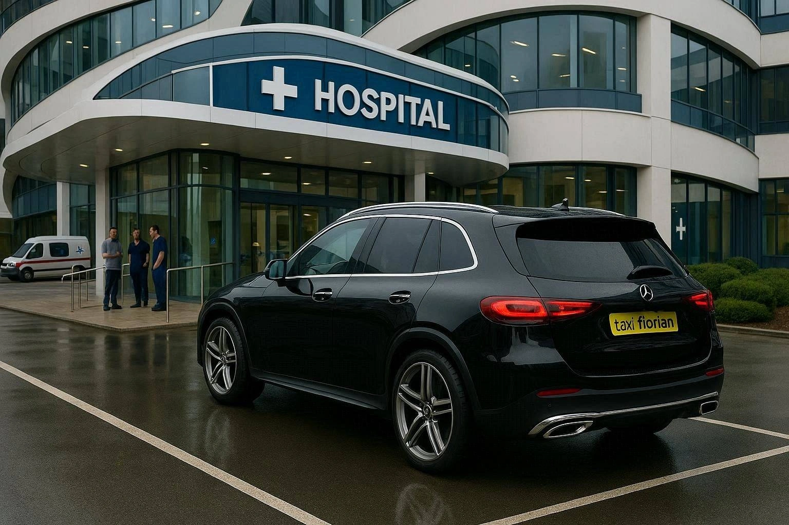

Transport médicalisé
Adaptation du véhicule et assistance personnalisée pour répondre aux besoins spécifiques des patients.
Taxi conventionné en Seine-et-Marne

Des trajets adaptés à vos besoins médicaux, avec professionnalisme et bienveillance.
Des solutions adaptées pour tous vos déplacements, médicaux ou non.
Adaptation du véhicule et assistance personnalisée pour répondre aux besoins spécifiques des patients.
Départs et arrivées à l'aéroport, avec ponctualité et confort.
Voyages confortables pour les trajets hors département.
TAXI FLORIAN – Un accompagnement humain, un transport en toute confiance.
Avec 20 ans d’expérience dans le transport de personnes et 12 ans dédiés au transport médical, je mets mon savoir-faire, ma ponctualité et ma sympathie à votre service.
Que ce soit pour des rendez-vous médicaux, des transferts hospitaliers ou des déplacements en toute sérénité, TAXI FLORIAN s’engage à vous accompagner avec professionnalisme, bienveillance et respect.
Votre confort et votre sécurité sont mes priorités absolues.
Besoin d’un transport médicalisé ou d’un trajet ? Je suis à votre disposition pour répondre à toutes vos demandes.